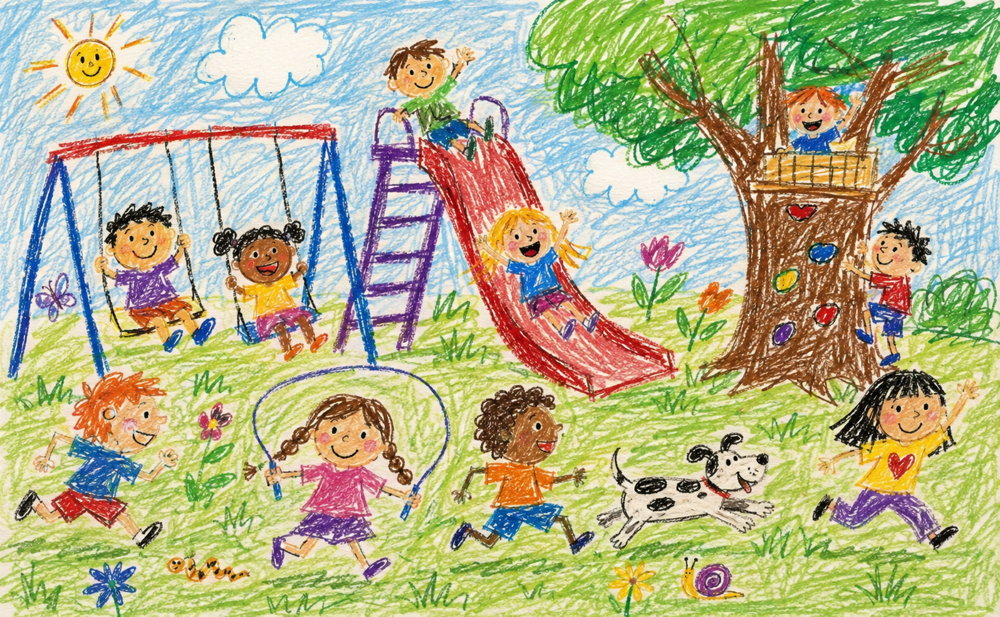
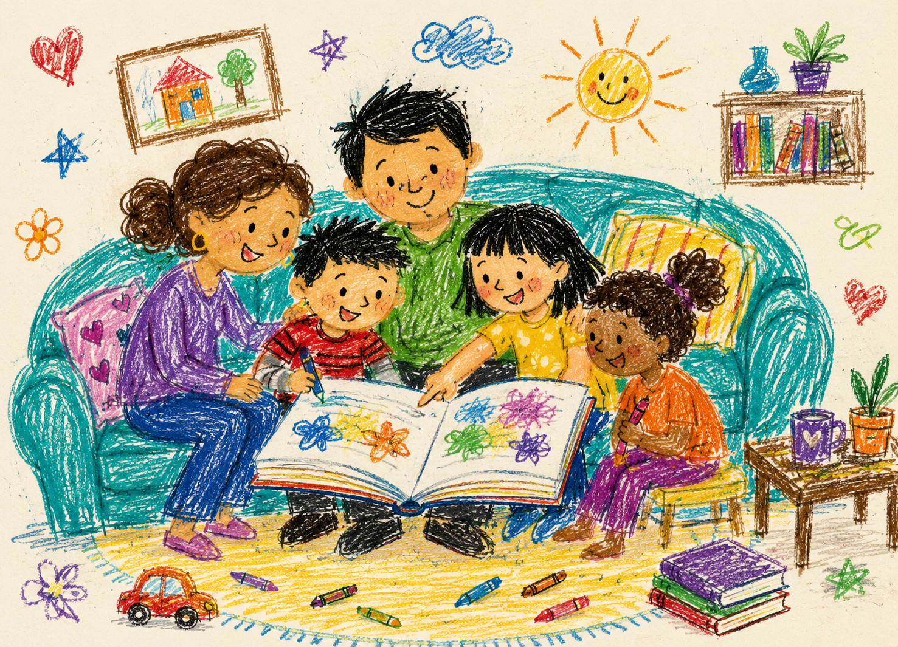
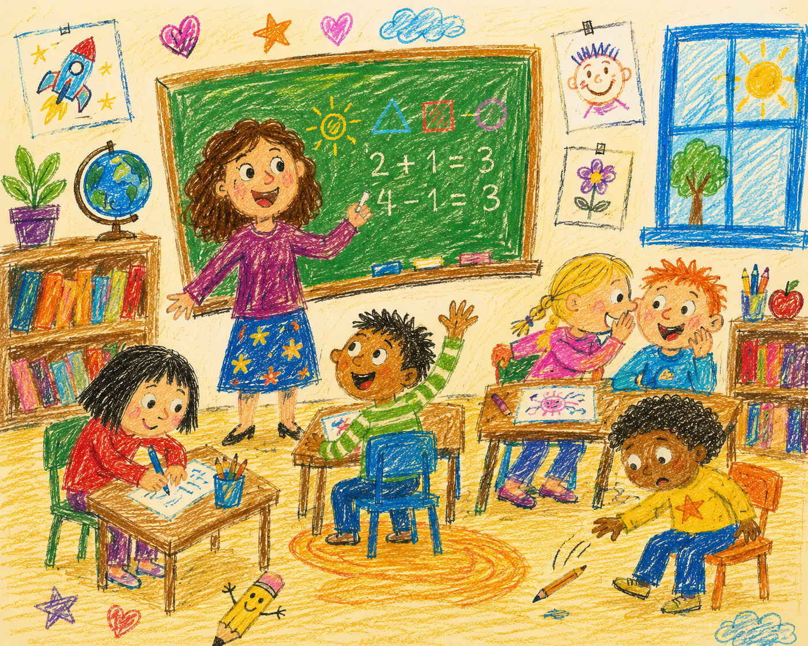

Curriculum clarity
The named framework and intended learning are visible and genuinely checked.

Why is Ari laughing?Primary & elementary · approximately ages 5–12
Print something. Ask a strange question. Make a mess. Go outside. Come back with evidence.
The useful cupboard
Every resource includes adult prompts, materials, an extension and the reason behind the activity—not just a page of questions.
Try a wider search or clear the filters.
Ask your child tonight
“Where do you think the wind goes when it stops?”
Do not rush to Google. Each person guesses first, explains why, then chooses one original source or real-world test that might help.

The grown-up corner
Children need time to think aloud, change direction and be temporarily wrong. Your questions can protect that time.
The couch escape hatch
Choose what works today. The activity uses ordinary materials, real observation and conversation.
Your offline mission
Choose four things on the left. No account, score or streak required.
Teacher studio
Resources should respect professional judgement. Adapt the context, language, challenge and evidence to the humans in front of you.

Before anything enters the cupboard
Every published resource should pass these checks before a family or teacher depends on it.
The named framework and intended learning are visible and genuinely checked.
The activity develops understanding—not only busy hands or completed boxes.
Children and adults know what to do, why it matters and when to pause.
Different bodies, senses, languages and ways of thinking are anticipated.